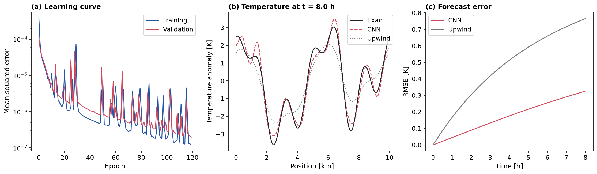

一次元移流方程式をCNNに学習させる
元の質問
気象学でよく登場する一般的な式でNNを試したい。一次元移流方程式を題材に記事にして。
回答
一次元移流方程式は、気象場のニューラルネットワーク（NN）学習を始める題材として適しています。気温が風で運ばれる意味が直感的で、厳密な解析解を教師データにでき、現在の気温分布から次の分布を予測する問題として実装できるからです。この記事では1次元CNNを学習し、解析解と一次精度風上差分法を基準に、1ステップ予測と8時間の反復予測を評価します。移流は、大気の運動によって気象要素が運ばれる過程です。[1]
要点
- 式の左辺は、ある場所の気温変化と、風による気温分布の運搬を表す。
- CNNには現在の気温分布と風速を入力し、1ステップ後の気温分布を学習させる。
- 1ステップ誤差が小さくても、出力を再入力する反復予測では誤差が蓄積する。
- 解析解、CNN、風上差分法を並べると、学習誤差と数値拡散を区別しやすい。
一次元移流方程式を読む
一定の風速 \(u\) が、気温偏差 \(T(x,t)\) を \(x\) 方向へ運ぶ場合を考えます。加熱、冷却、拡散を含めない一次元移流方程式は式 (1) です。
\[ \frac{\partial T}{\partial t} +u\frac{\partial T}{\partial x} =0 \tag{1} \]
| 記号 | 意味 | 単位 |
|---|---|---|
| \(T(x,t)\) | 位置と時刻ごとの気温偏差 | \(\mathrm{K}\) |
| \(u\) | 一定の風速 | \(\mathrm{km\,h^{-1} }\) |
| \(x\) | 位置 | \(\mathrm{km}\) |
| \(t\) | 時刻 | \(\mathrm{h}\) |
第1項 \(\partial T/\partial t\) は、固定した地点で観測される気温偏差の時間変化です。第2項 \(u\,\partial T/\partial x\) は、気温の空間勾配が風で運ばれる効果です。式 (1) は両者が打ち消し合い、空気と一緒に移動すると気温偏差が変わらないことを表します。
解析解では気温分布が形を保って移動する
初期気温分布を \(T_0(x)\) とすると、式 (1) の解は式 (2) です。一定風速の線形移流方程式では、初期分布が形を保ったまま速度 \(u\) で移動します。[2]
\[ T(x,t)=T_0(x-ut) \tag{2} \]
例えば \(u=0.75\,\mathrm{km\,h^{-1} }\)、\(t=8\,\mathrm{h}\) なら、分布は風下へ \(ut=6\,\mathrm{km}\) 移動します。今回は長さ10 kmの領域の右端と左端をつなぐ周期境界条件を使います。
解析解から多様な教師データを作る
同じ波形だけで学習すると、その形を記憶しただけのCNNになりかねません。そこで初期分布を、波数、振幅、位相が異なる6個の周期波の和として作ります。
\[ T_0(x) =\sum_{n=1}^{6} A_n \sin\left( \frac{2\pi n x}{L}+\varphi_n \right) \tag{3} \]
振幅 \(A_n\)、位相 \(\varphi_n\)、風速 \(u\) を軌道ごとに変えます。正と負の風速を含めるため、CNNは風向に応じて情報を運ぶ向きも学ぶ必要があります。
コードではフーリエ変換のシフト則を使い、式 (2) の平行移動を格子上で計算します。NumPyの fft は1次元離散フーリエ変換を計算し、fftfreq は格子間隔に対応する周波数を返します。[3]
def exact_advection(
temperature: np.ndarray,
wind_speed: float,
elapsed_time: float,
) -> np.ndarray:
"""周期領域上で気温分布を風下へ平行移動する。"""
wave_numbers = 2.0 * np.pi * np.fft.fftfreq(N_GRID, d=DX)
spectrum = np.fft.fft(temperature)
phase_shift = np.exp(
-1j * wave_numbers * wind_speed * elapsed_time
)
return np.fft.ifft(spectrum * phase_shift).realCNNへの入力を2チャンネルにする
時刻 \(t_k\) の格子点上の気温偏差をベクトル \(\boldsymbol{T}_k\) とします。CNNには、現在の気温分布と風速から1ステップ後を予測させます。
\[ \widehat{\boldsymbol{T} }_{k+1} =F_{\boldsymbol{\phi} } \left(\boldsymbol{T}_k,u\right) \tag{4} \]
入力配列のshapeは (サンプル数, 2, 格子点数) です。チャンネル0には気温偏差、チャンネル1には全格子点へ同じ風速を並べます。
# shapeは (2, N_GRID)
input_sample = np.stack(
[scaled_temperature, scaled_wind],
axis=0,
)PyTorchの Conv1d は、入力をバッチ、チャンネル、信号長の順で受け取ります。また、padding_mode="circular" を指定できます。[4] この設定で領域の左右をつなぎ、物理モデルの周期境界とCNNの境界処理を一致させます。
現在場にCNNの補正量を足す
1ステップの時間間隔が短いと、次の気温分布は現在の分布とよく似ています。そこで、CNNに次状態を最初から作らせる代わりに、現在場へ加える補正量を求めさせます。
\[ \widehat{\boldsymbol{T} }_{k+1} =\boldsymbol{T}_k +G_{\boldsymbol{\phi} } \left(\boldsymbol{T}_k,u\right) \tag{5} \]
class AdvectionCNN(nn.Module):
"""現在の気温と風速から1ステップ後を予測する。"""
def __init__(self) -> None:
super().__init__()
self.network = nn.Sequential(
nn.Conv1d(2, 32, 5, padding=2, padding_mode="circular"),
nn.Tanh(),
nn.Conv1d(32, 32, 5, padding=2, padding_mode="circular"),
nn.Tanh(),
nn.Conv1d(32, 1, 5, padding=2, padding_mode="circular"),
)
def forward(self, inputs: torch.Tensor) -> torch.Tensor:
current_temperature = inputs[:, 0:1, :]
correction = self.network(inputs)
return current_temperature + correction学習用と検証用を軌道単位で分ける
同じ軌道から取り出した隣接時刻は互いによく似ています。サンプル単位で無作為分割すると、似た状態が学習用と検証用の両方へ入り、未知データへの性能を過大評価するおそれがあります。今回は初期条件ごとに分け、240本を学習、別の60本を検証に使います。
損失関数は1ステップ後の気温分布に対する平均二乗誤差です。
\[ \mathcal{L} =\frac{1}{N N_x} \sum_{j=1}^{N} \sum_{i=1}^{N_x} \left( \widehat{T}_{j,i}^{k+1}-T_{j,i}^{k+1} \right)^2 \tag{6} \]
風上差分法を比較対象にする
風速が正の場合の一次精度風上差分法は式 (7) です。
\[ T_i^{k+1} =T_i^k -C\left(T_i^k-T_{i-1}^k\right), \qquad C=\frac{u h}{d} \tag{7} \]
ここで \(h\) は時間間隔、\(d\) は格子間隔、\(C\) はCFL数です。この陽的な風上差分法は \(0\leq C\leq1\) で安定ですが、振幅を弱めて分布を滑らかにする数値拡散を持ちます。[5]
1ステップ誤差と反復予測誤差を分ける
学習で直接小さくするのは式 (6) の1ステップ誤差です。長期予測では、CNNの出力を次の入力として繰り返し使用します。そのため、各ステップの小さな誤差が蓄積します。
各時刻の評価には、解析解に対する空間RMSEを使います。
\[ \operatorname{RMSE}(t_k) =\sqrt{ \frac{1}{N_x} \sum_{i=1}^{N_x} \left( \widehat{T}(x_i,t_k)-T(x_i,t_k) \right)^2 } \tag{8} \]
コードを実行する
コメント付きの完全なコードは、advection-cnn.py です。データ生成、配列のshape、CNNの各層、学習、反復予測を順番に追えるように分割しています。
リポジトリのルートで、次のコマンドを実行します。
uv run --with numpy --with torch --with matplotlib \
python notes/meteorology/examples/advection-cnn.py
結果を読む
- 学習曲線: 学習誤差だけでなく、別軌道に対する検証誤差も低下しているかを見る。
- 8時間後の分布: 解析解からの位置ずれ、振幅の増減、細かい振動を確認する。
- RMSE: 1ステップでは小さかったCNNの誤差が、反復回数とともにどう増えるかを見る。
- 風上差分法: 山と谷が徐々に弱くなる数値拡散を、CNNの誤差と区別する。
この実験で分かる範囲を限定する
このモデルは、一定風速、一次元、周期境界、滑らかな気温偏差だけを扱います。加熱、放射、乱流拡散、相変化、鉛直運動、気温が風へ及ぼす影響は含みません。また、学習した風速範囲や波数範囲の外側では外挿になるため、精度を保証できません。
したがって、このCNNは実際の天気予報モデルではありません。目的は、気象場を配列としてNNへ渡す方法、境界条件をネットワークへ反映する方法、短期誤差と長期誤差を分ける考え方を理解することです。
まとめ
一次元移流方程式なら、気象学の基本概念を保ったまま、点の状態を扱うNNから空間分布を扱うCNNへ進めます。解析解から教師データを作り、現在の気温分布と風速から次状態を学習し、解析解と風上差分法の両方に比較することで、NNの学習誤差、反復誤差、数値拡散を別々に観察できます。次の段階では、拡散項を加えた移流拡散方程式、空間的に変化する風、二次元場へ拡張できます。